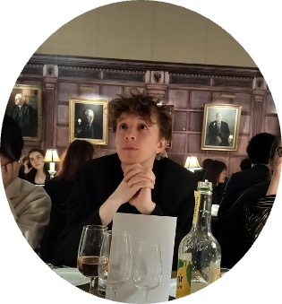
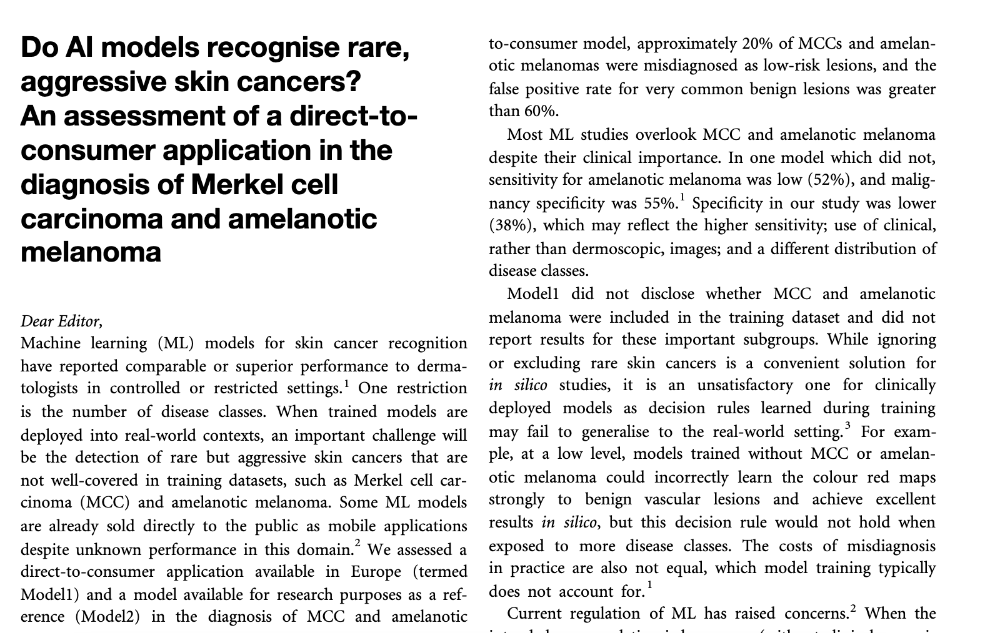

I'm a final year dermatology resident and Academic Clinical Fellow at Barts/Royal Free/QMUL.
I'm currently out-of-programme to do research (year 1 = MPhil in Computational Biology at Trinity College, University of Cambridge, year 2-4.5 = PhD).
I made this page so I would write something in HTML/CSS.
My main research interests are
1) Computational approaches applied to skin, particularly spatial transcriptomics
2) Evidence-based medicine
